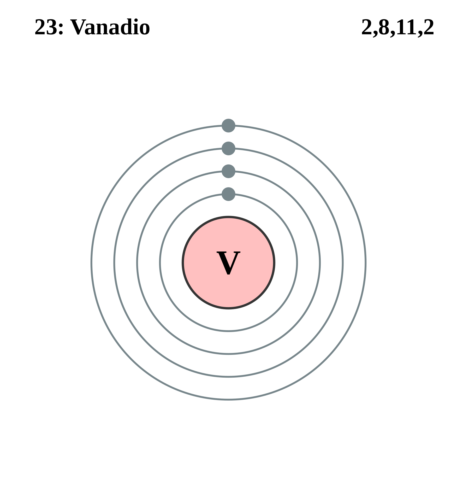

|
|
||
|
VANADIO El vanadio se descubrió por primera vez en 1801, pero no se identificó correctamente y se redescubrió en 1830. El vanadio en su estado natural es una mezcla de dos isótopos. Existen otros nueve isótopos inestables. El vanadio puro es un metal blando, dúctil y de color blanco brillante con buena resistencia estructural y resistencia a la corrosión de bases, ácido sulfúrico, ácido clorhídrico y agua salada. Se utiliza habitualmente en aplicaciones nucleares y para la fabricación de aceros resistentes a la oxidación y de herramientas de alta velocidad. Asimismo, se usa como estabilizador de carburo en la fabricación de aceros. |
 |
DATOS Número Atómico: 23 Peso Atómico: 50.94 Electronegatividad: 1.63 Configuración Electrónica: [Ar] 3d³ 4s² Estados de Oxidación: +5,2,3,4 No. de Electrones de Valencia: 5 |